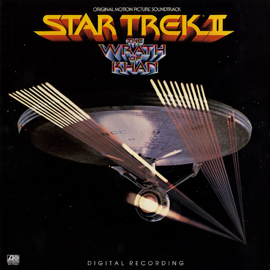
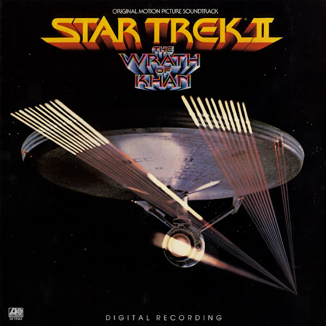

James Horner
About the Artist:
James Horner was an Academy Award-winning composer, most well known for his work on some of the most high-grossing movies of all time, including James Cameron's Titanic and AVATAR. His unique style of combining Celtic style with classical orchestration and modern electronic sounds created a unique style which became very successful accross the film industry. Chances are good that you too have seen a movie that featured this artist's work, as he was very prolific in his career, composing the scores for over 100 films.
Notable Works:
 
